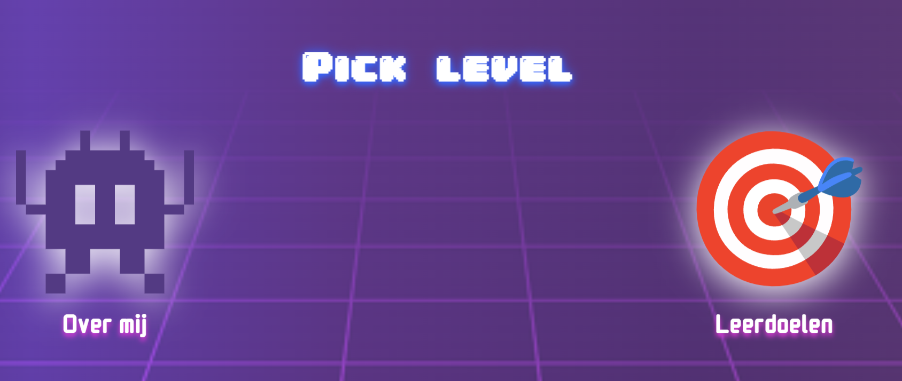

Sprint 0
Introductie van de minor

// Uitkomst
Met sprint 0 begon officieel de minor, waarbij we gelijk hard van start gingen. Voor sprint 0 moest ik een website maken waarbij ik mezelf voorstel en mijn identiteit doorschijnt. Bovendien moest ik leerdoelen opstellen voor de minor en mijn startniveau overstijgen.
Het was voor mij een leuke maar zware start van de minor, ik wist wel gelijk wat me te wachten stond. Ik vond het belangrijk om een goede start te maken en mijn kennis op te frissen, ik had daarom voor mezelf ook een doel gesteld om zo min mogelijk AI te gebruiken tijdens het coderen en daarmee mezelf forceren om echt de kennis zelf op te doen en toe te passen.
Al met al was dit gelukt en ben ik tevreden met mijn inzet en resultaat. In de site heb ik mijn affiniteit met gamen laten doorschijnen door middel van een gaming neon/retro thema qua kleuren en een kleine minigame. Ik heb mijn kennis kunnen opfrissen en een goede start kunnen maken aan de minor. Wel heb ik gemerkt dat ik Javascript het lastigst vind qua syntax en samenhang dus kan dat extra oefening gebruiken.
Bekijk het project >// Reflectie
Leerdoel 1
Een solide basis leggen in HTML, CSS en JavaScript om goed voort te kunnen bouwen met frameworks en verder de front-end development kant op te gaan.
Ik vind dat ik dit leerdoel na sprint 0 best goed heb behaald. Ik heb met name voor css een goede basis kunnen leggen voor de toekomst van de minor. Javascript blijft lastig maar ik heb basis syntax en principes weer kunnen gebruiken. Qua html heb ik een aantal elementen gewoon op de juiste manier kunnen toepassen zoals sections, spans en divs.
Leerdoel 2
Niet gelijk de code induiken, maar eerst een beeld vormen qua ontwerp met simpele schetsen op papier. Zo kan ik gerichter te werk gaan.
Aan het begin was ik nog kort bezig geweest met schetsen op papier en heeft het wel geholpen voor ideevorming tijdens sprint 0. Maar hoe verder we in het proces zaten ben ik gewoon on the go verder gaan coderen en zo mijn ontwerp gaan uitbreiden i.p.v. met schetsen. Dit leerdoel heb ik dan ook losgelaten, zeker na sprint 0.
Leerdoel 3
Mezelf uitdagen en zoveel mogelijk zelf doen, zodat ik de concepten later echt zelf kan toepassen en niet vergeet.
Ik vind dat ik dit leerdoel zeker behaald heb. Ik heb echt mijn best gedaan om zo min mogelijk AI te gebruiken en juist veel zelf op te zoeken qua documentatie etc. Op enkele stukjes na bij javascript is dit helemaal gelukt. Ik heb dan ook veel kunnen leren deze eerste twee weken, o.a. dankzij dit leerdoel.